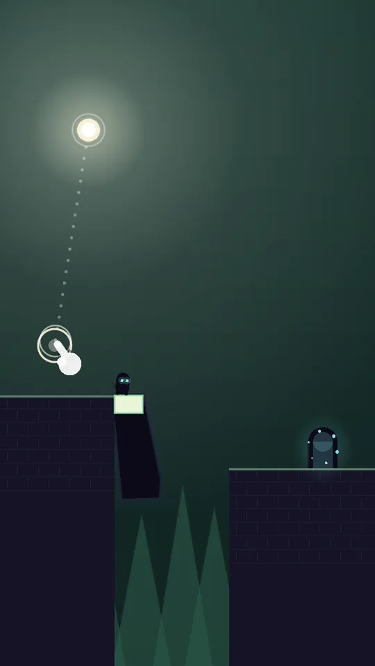
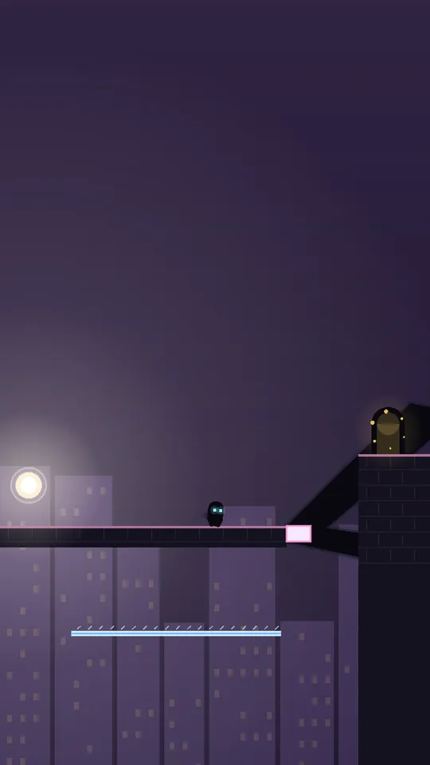
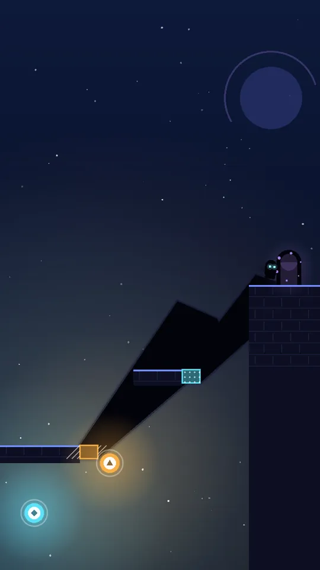

Işığı sürükle.
Gölgelerde yürü.
ShadowRunner, Android için tek parmakla oynanan bir bulmaca oyunu. Küçük gölge yaratığın yalnızca gölgelerin üzerinde yürüyebilir — ışığı hareket ettir, gölgeleri uzatıp kısaltarak köprülere ve rampalara dönüştür.
Google Play — çok yakında


Saniyeler içinde öğren
Tek parmak, uzun metin yok. İlk bölümlerde hareketli bir el fikri gösterir.
40 özenle tasarlanmış bölüm
Orman, şehir ve uzay — ikinci ışık, hareket eden bloklar, aynalar, zamanlı kapılar ve renkli ışıkla.
Günlük bulmaca
Her gün cihazında seçilen yeni bir bulmaca. İnternetsiz de çalışır.
Herkes için
14 dil, renk körlüğüne uygun mod, büyük düğmeler, kapatılabilir titreşim.
Oyun ücretsizdir ve reklam gösterir (Google AdMob). Yasal olarak gerekli olan bölgelerde reklam istenmeden önce oyun onayınızı sorar. Gizlilik Politikası'nı okuyun.